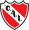
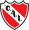
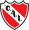

Racing Club, conocido popularmente como La Academia, es una entidad polideportiva con sede en Avellaneda, ciudad ubicada en el Gran Buenos Aires, Argentina. Fue fundado como club de fútbol el 25 de marzo de 1903, con la particular de ser el primer club argentino creado íntegramente por criollos.
Los colores que identifican a la institución son el celeste y el blanco, utilizados en honor a los colores patrios de la República Argentina.
Todo empezó en 1898, en el barrio de Barracas al Sud (hoy Avellaneda) cuando unos jóvenes trabajadores del Ferrocarril Sud comenzaron a juntarse para practicar el fútbol. El 12 de mayo de 1901 formarían el Football Club Barracas al Sud, el cual un año más tarde, el 16 de marzo de 1902 se fragmentaría formando el Colorados Unidos del Sud.
Luego de llegar a un acuerdo de paz entre ambas instituciones debido a que en solitario ninguna lograba el vuelo pretendido, se convencerían de que debían juntarse en un solo club más grande y poderoso. Fue así como en una reunión realizada el 25 de marzo de 1903, uno de los muchachos socios de ambos clubes: Germán Vidaillac, de ascendencia francesa, les mostraría a los presentes una revista de autos del país galo en cuya portada se leía la palabra: RACING. La moción sería aprobada clamorosamente por todos, por lo que quedaría conformado el Racing Football Club, con su estatuto aprobado el 7 de febrero de 1904 y siendo Arturo Artola su primer Presidente. En 1905, el club se afiliaría a la Argentine Football Association, convirtiéndose en la primera institución inscripta netamente criolla. El 18 de diciembre de 1910, luego de ganarle la final de la segunda división a Boca Juniors por 2 a 1 frente a 4000 personas, Racing conseguiría el ascenso a la Primera División de Argentina, justamente en el Centenario de la Revolución de Mayo, cambiando sus colores en homenaje por los mismos de la bandera Argentina: el celeste y el blanco.
Su nombre oficial es Estadio Presidente Perón, aunque también es denominado como "El Cilindro de Avellaneda" o "El Coliseo". Sus denominaciones anteriores, surgieron debido a que su estructura es cilíndrica, perfectamente redonda y da un giro de 360º. Se ubica sobre las calles Mozart y Corbatta en la localidad de Avellaneda en el sur del Gran Buenos Aires.
Es el primer estadio de Argentina en tener la totalidad de sus gradas techadas. Además es el segundo estadio de mayor superficie en todo el país. Entre los estadios de Racing Club e Independiente, hay tan sólo 3 cuadras de distancia (300 metros) que los separan.
El Clásico de Avellaneda es un partido de fútbol que enfrenta a dos de los equipos más laureados y populares de la Argentina: Racing e Independiente, ambos de la Ciudad de Avellaneda, una de las pocas del mundo que posee dos clubes campeones del mundo.
Contando enfrentamientos ligueros, internacionales y por copas nacionales (la totalidad de los duelos oficiales) el Club Atlético Independiente lleva una ventaja sobre su clásico rival de 18 partidos.
| Competición Internacional | Titulos |
| Copa Internacional | 1967 |
| Copa Libertadores de América | 1967 |
| Supercopa Sudamericana | 1988 |
